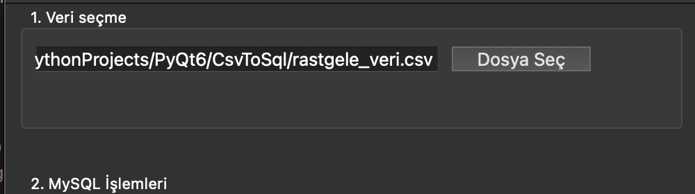
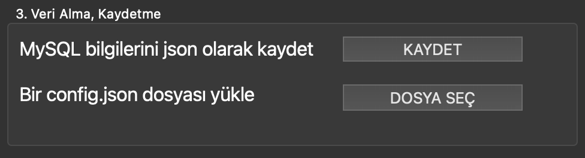
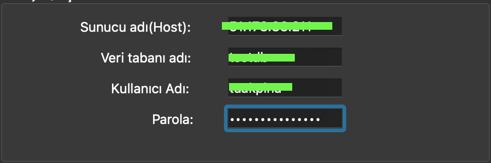

CsvToSql Kurulum Rehberi
Bu proje, Python dilinde yazılmıştır ve çalışmak için iki temel harici kütüphaneye ihtiyaç duyar: PyQt6 (arayüz için) ve mysql-connector-python (veritabanı bağlantısı için).
Aşağıdaki adımları izleyerek projeyi çalıştırmak için gerekli ortamı kurabilirsiniz
Global Olarak Yükleme(Tavsiye edilmez)
Sanal alan oluşturmadan doğrudan indirme yapmaktır.
Bu adımlarda bir hata alırsanız pip3 yerine pip kullanmayı deneyiniz.
PyQt6
İlk öncelikle PyQt6 kütüphanesini kurunuz.
pip3 install PyQt6
MySQL-Connector
Daha sonra ise mysql-connector kütüphanesini kurunuz.
pip3 install mysql-connector-python
Error
Eğer pip3 hatası aldıysanız, ya da program böyle bir komut bulamadıyssa pip kullanmayı deneyiniz.
Sanal Makine Olarak Yükleme(Tavsiye Edilir)
Proje bağımlılıklarını bilgisayarınızdaki diğer Python projelerinden ayırmak için bir sanal ortam (venv) kullanmanız şiddetle tavsiye edilir.
Mac/Linux/Windows Sanal Ortam Oluşturma
Proje klasörünün içindeyken şu komutu çalıştırın:
python3 -m venv venv
Error
Eğer python3 hatası aldıysanız, ya da program böyle bir komut bulamadıyssa python kullanmayı deneyiniz.
Mac/Linux Sanal Ortam Aktive Etme
source venv/bin/activate
Windows İçin Aktive Etme
.\venv\Scripts\activate
Gerekli Kütüphanelerin Kurulması
Sırayla şu komutları çalıştırın:
pip3 install PyQt6
pip3 install mysql-connector-python
Error
Eğer pip3 hatası aldıysanız, ya da program böyle bir komut bulamadıyssa pip kullanmayı deneyiniz.
Programı Çalıştırma
Ana klasördeki main dosyasını seçiniz ve çalıştır butonuna basınız.
Ya da terminal üzerinden çalıştırabilirsiniz
python3 main.py
Projenin Çalışması
MainWindow

Program açıldığında bizi böyle bir ekran karşılayacaktır. Burada bizden gerekli bilgileri girmemizi isteyecektir.
1. Veri Seçme
İlk kısımda Dosya Seç butonuna basarak Csv dosyasını seçiyoruz.


2. MySQL İşlemleri
Bu kısımda server'a bağlanmak için gerekli bilgileri giriyoruz.

3. Veri Alma, Kaydetme
Buradan istersek yazdığınız bilgileri KAYDET butonuna basarak kaydedebilir, Ya da DOSYA SEÇ butonuna basarak da kaydettiğiniz bilgileri tek tek yazmak yerine yükleyebilirsiniz.


4. Dönüşüm ve Tablo Ayarı
Bu kısımda ise tablo adını belirliyorsunuz.
İstersenizde seçenekleri de seçebilirsiniz.
ÇALIŞTIR butonuna bastığınızda program çalışacaktır.

Projenin Çalışma Örneği
Programı çalıştırmadan önce, rastgele veriler içeren CSV dosyasını göstermek istiyorum:

Burada 100 satırlık bir veri var. Çalıştır butonuna bastığımda artık bu veriler mysql formatında olmuş olacak

Burada görmüş olduğunuz gibi veriler aktarılmış oldu. Sadece bir kısmını gösterdim ama mantık bu şekilde.
Projenin Geleceği
Eksikler Ve Hatalar
MySQL bilgilerini kaydetmek için kullandığınız buton; KAYDET şu anda çalışmamaktadır.
Tablo yoksa oluştur ve Veri tabanını yeniden oluştur seçenekleri şu anda çalışmamaktadır.
Program arka planda bir dosyada log alır ama arayüze log kayıtlarını aktarmamaktadır.
Bağlantıda sorunlar yaşayabilirsiniz.
Program büyük veri setlerinde yavaş kalacaktır.
Sorunların Giderilmesi
Burada ki bütün sorunlar çözülebilir ancak hız sorunun çözülmesi biraz zaman alacaktır. Dosya işlemleri için C/C++ ile hız artışı sağlanacaktır.
Yapay Zeka entegrasyonu ile özellikle büyük veri setlerinde gelen verinin hangi tür olduğunu daha iyi kavrayacak.